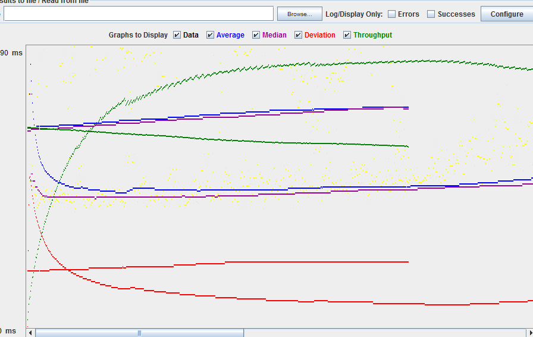

| Single-instance version cases |
Graph Results Screenshot |
Average Query Time(ms) |
Average Search Servlet Time(ms) |
Average JDBC Time(ms) |
Analysis |
| Case 1: HTTP/1 thread |
|
40 |
17.7 |
13.4 |
Using pooling and prepared statements results in a relatively fast search |
| Case 2: HTTP/10 threads |
|
40 |
18.1 |
16.6 |
Using pooling and prepared statements results in a relatively fast search |
| Case 3: HTTPS/10 threads |
 |
190 |
n/a |
n/a |
Fabflix doesn't have https enabled |
| Case 4: HTTP/10 threads/No prepared statements |
|
45 |
16.5 |
15.3 |
Not using prepared statements in single-instance cases results in about the same speed as with |
| Case 5: HTTP/10 threads/No connection pooling |
|
50 |
43.7 |
35.7 |
No connection pooling resulted ina much slower search |